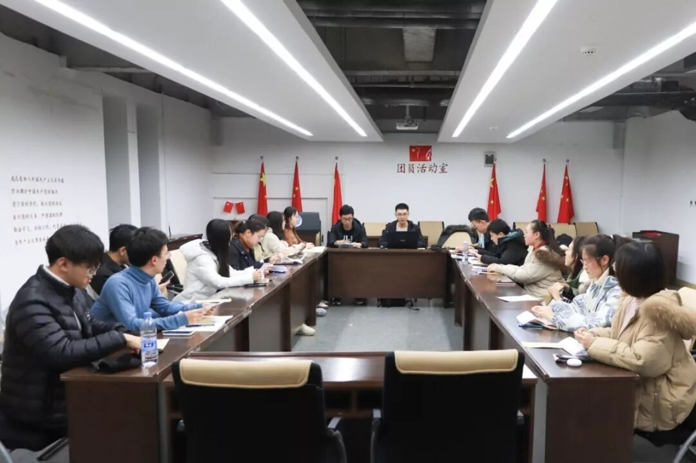
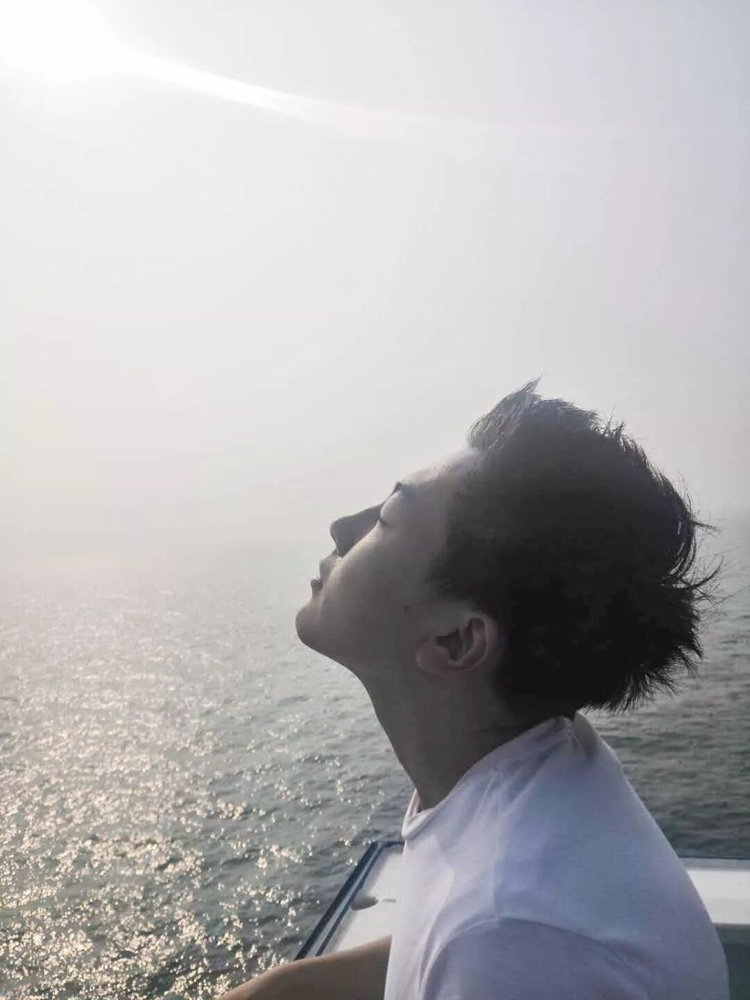
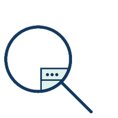
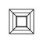
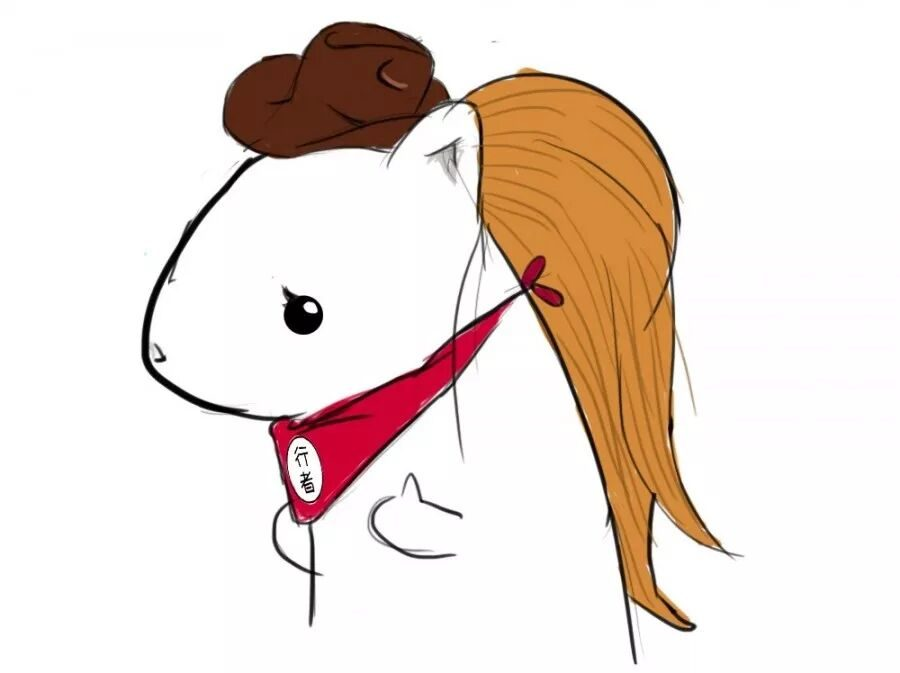
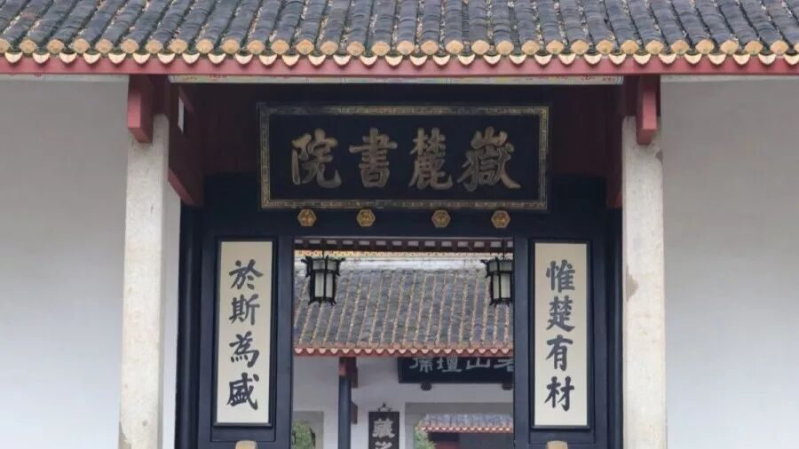
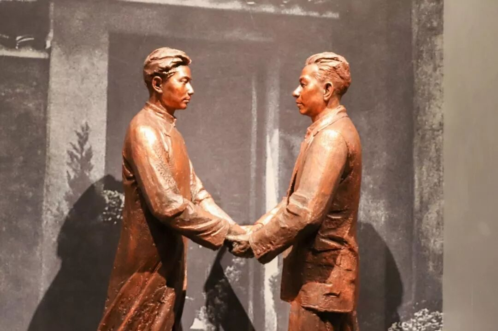
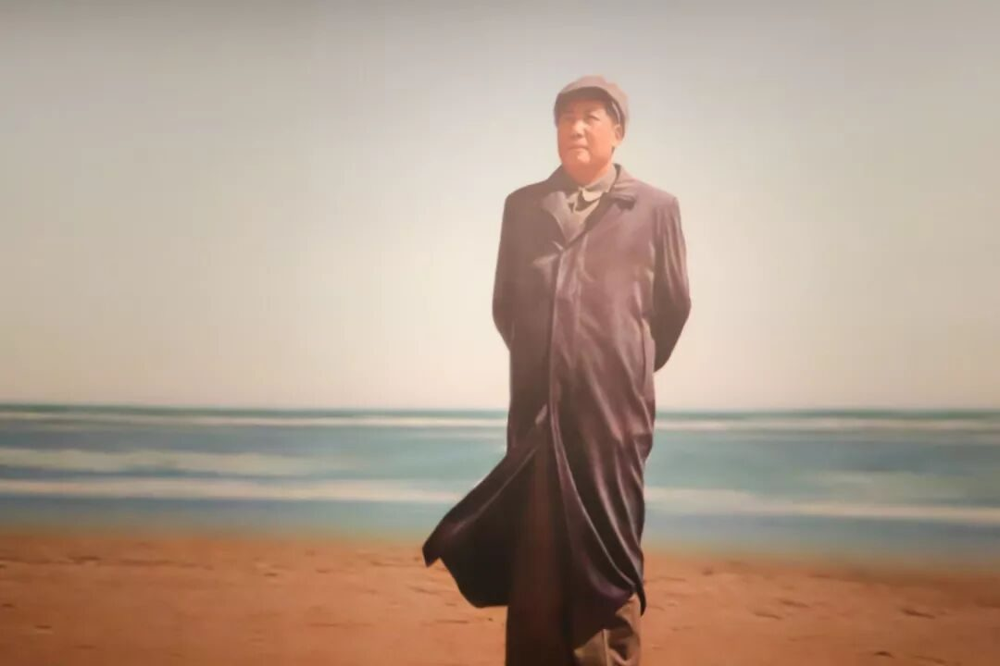
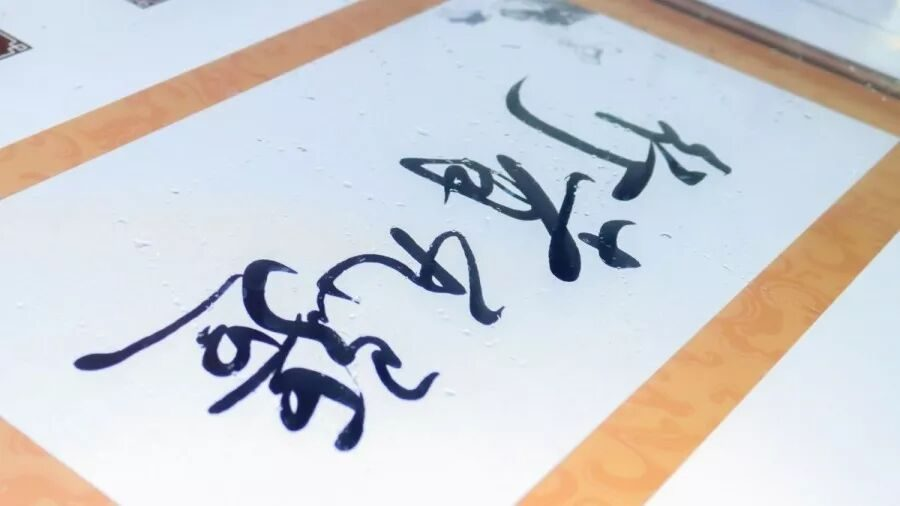

【赋墨沉湘·七】每一次扬帆，迎一场挑战。

每一次扬帆，迎一场挑战。

神把光风交给霁月

从正式成为行者无疆的一员到言念潇湘行程结束，时光小虫爬过了228个日夜，八个月的行者相随之缘随时间的陈酿令人酩酊大醉。这一路走来，美好尽数小心珍藏，我就像一个拾荒者，慢慢收集你的过往，我走的很慢，因为我知道，行者的脚步永远不会停息。
还记得源洄渝州那期参加面试时的紧张不安，面试过程中回答问题时的强装淡定，所幸被队长捞上岸，人生多了一抹靓丽。到言念潇湘时，作为魔鬼面试官，看到面对各种问题流畅回答的你们，心想，高手过招，优秀优秀。期待一场大佬云集的盛宴。

从源洄渝州的文字组小菜鸡到言念潇湘扛起外联组的大旗，每一次扬帆，都是一次挑战。感谢每位老队员对我的帮扶以及行者们的不离不弃💪。
We are 伐木累！
不同的角色扮演、不同的忙碌时间段、意外重合的熬夜时光，让我在每一期都有了不同的收获。协助队长从无到有的新团队组建，为考研老队员送上的暖心祝福，和有趣的行者们实践前期的准备，终于一切就绪，和我们的行者酱一起共赴潇湘。


本次我们调研的主题是湖湘文化与人的相互作用。通过行程的稳步推进从中国书院博物馆志愿者口中我们了解到湖南精神内核为“原始血性，移民开拓，农耕协作。”用偏官方语言提炼则是“心忧天下、敢为人先、经世致用、实事求是”。
于我而言，给我印象最深的湖南精神则是敢为人先。无论是湘绣与现代科技的大胆融合，还是铜官窑捏塑的创新技法，都是对这一精神的展现与诠释。而行程中最让我感动的则是少奇同志和毛泽东同志的生平事迹。伟人之所以是伟人，绝非一蹴而就，而是量的积累引起的质变，是他们一步一个脚印走出来的！
一个社会阶级的演变是广大人民群众作用的结果，而伟人也是人民认可的领袖。毛刘二人心中有人民，有国家，为共产主义事业鞠躬尽瘁死而后已。刘少奇主席和毛泽东主席身上实事求是、经世致用、心忧天下、敢为人先的精神，正是湖湘精神的完美演绎。



END
人生的意义在于要做自己热爱的事，行者无疆正是我所热爱的。纵然风会带走我们存在过的证明，可关于行者的记忆终成岁月成酿。在某个阳光慵懒的午后，品一份留齿醇香。

来源 | 行者无疆实践团
文字 | 张锐
排版 | 康艳虎
审核 | 段智然 康艳虎 黄玲
行者无疆实践团
QQ：2758025831

随行者一起认识世界
长按二维码